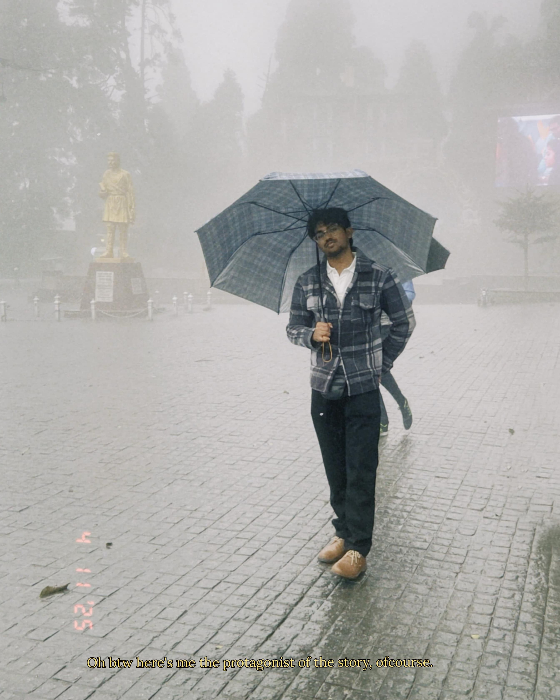

Arghya Bhowal

About Me
Analytical, detail-oriented Computer Science undergraduate at Central Institute of Technology, Kokrajhar.
Strong academic performer with a CGPA of 9 and a keen interest in programming and collaborative projects.
Known for adaptability, critical thinking, and a proactive attitude.
Education
- B.Tech in Computer Science, CIT Kokrajhar (2023–Present) — CGPA: 9
- Higher Secondary, The Reality Public School (2020–2022) — 92.6%
- Secondary, The Reality Public School (2019–2020) — 95.2%
Skills
- C Programming
- Java
- HTML
- Adaptability & Critical Thinking
- Communication (English, Assamese, Bengali, Hindi)
Academic Achievements
- Consistently ranked in the top 5% academically.
- Hosted several cultural and academic events.
- Actively participated in science exhibitions and public speaking.
Contact
📞 9101211073
📧 arg.bhowal@gmail.com
Links